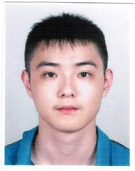

|  |
Guillaume DUEtudiant en Pharmacie en pleine reconversion afin d'apprendre le code 4, rue des cités 93300 Aubervilliers 📞06 09 97 10 35 📧mozillia369@gmail.com |
J'ai travaillé en pharmacie depuis ma quatrième année d'étude et a continué quelques années après. Cependant plusieurs évènements se sont passés dans ma vie personnel m'empêchant de continuer.
J'ai donc décidé de me reconvertir et de me lancer dans la programmation car j'ai toujours été intéressé dans le code et comment notre monde actuel repose dessus.
| 2011-2012 Aubervilliers, France |
Diplome du baccalauréat scientifique Lycée Le Corbusier à Aubervilliers |
| 2012-2013 Bobigny, Villetaneuse |
Première année commune aux études de santé (PACES) Université Sorbonne Paris Nord |
| 2013-2016 Paris, France |
Diplôme de formation générale en science Pharmaceutique Université Paris 5 Descartes |
| 24/07/2017 au 11/05/2019 (Aubervilliers, France) |
Pharmacie Lepage | Etudiant en Pharmacie Tâches réalisées :
|
| 12/05/2019 au 31/01/2020 (Aubervilliers, France) |
Pharmacie Ouabo Taboué | Etudiant en Pharmacie Tâches réalisées :
|
| 01/07/2020 au 22/10/2021 (Paris 19ème, France) |
Grande Pharmacie de Stalingrad | Etudiant en Pharmacie 6ème année validée Tâches réalisées :
|
|
|